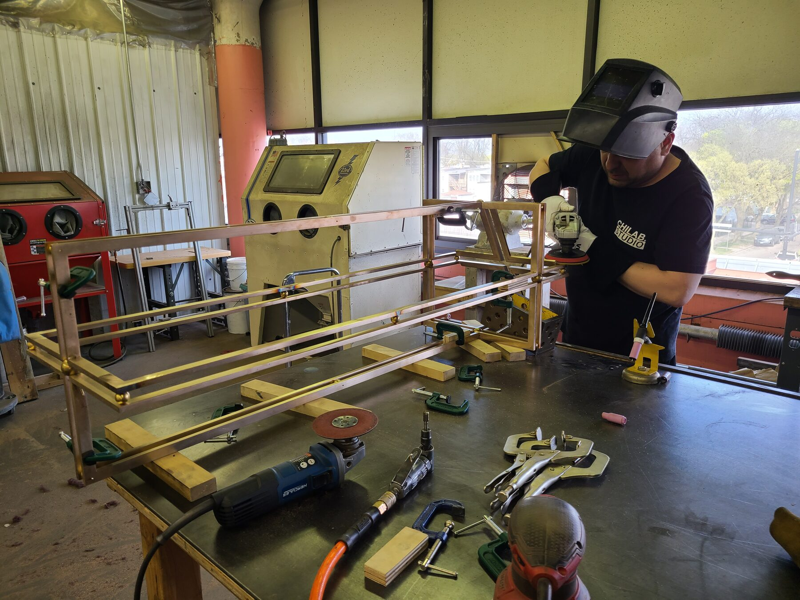

About
Studio

Founded
2013, Chicago, Illinois
Contact
Press
- 2025 NBC Chicago
The city's own special tulips take center stage on Mag Mile - 2025 The Magnificent Mile
Signature tulip returns for the 2025 bloom season - 2024 Chicago Sun-Times
Butterfly sculptures land across the city with the Peggy Notebaert Nature Museum - 2023 FOX 32 Chicago
Chicago communities use artistic expression to highlight climate change - 2023 City of Chicago, DCASE
O'Hare Terminal 5 expansion, the largest acquisition of work by Chicago artists in thirty years - 2021 Chicago Tribune
Uber Freight opens its global headquarters at the Old Post Office - 2021 Frame
Amenity spaces build comfort and productivity at Uber's Chicago office - 2021 Built In Chicago
Uber opens its new office in the Old Main Post Office - 2019 Newcity
Design Issue, the Unfolding Chair on the cover - 2019 Crain's Chicago Business
Coolest Offices, Knoll's Fulton Market showroom - 2019 Interior Design
Gensler reinforces Knoll's design philosophy at the new Chicago flagship - 2014 CHGO DSGN
Recent object and graphic design, Chicago Cultural Center - 2013 The New York Times
At the International Contemporary Furniture Fair, going for the remix
01
ChiLab Studio is a Chicago-based project development and fabrication studio working across art, design, architecture, and public space.
Founded in 2013, the studio grew out of a collaboration between friends from different disciplines and a shared belief that ambitious ideas benefit from being developed closely with the people who make them. Today, ChiLab works with artists, designers, architects, institutions, and cultural organizations to realize projects that require an unusual combination of design thinking, technical development, material knowledge, and skilled fabrication.
Our work ranges from fine art and public commissions to custom furniture, architectural elements, cast glass, metalwork, specialty finishes, prototypes, and one-of-a-kind objects. Some projects arrive as drawings ready to build. Others begin as an idea, a material question, or a problem that still needs to be worked through. In either case, we become part of the project team, helping develop the work from concept through engineering, prototyping, fabrication, finishing, and installation.
ChiLab maintains an active fabrication studio in Chicago and works with a broader network of craftspeople, engineers, foundries, manufacturers, and specialty fabricators. This allows us to move comfortably between the handmade and the industrial, selecting the right process and expertise for each project while maintaining close control over quality and intent.
Collaboration remains central to the studio. We take on commissions individually and build teams around the particular needs of the work rather than asking projects to fit a predetermined production model.
ChiLab Studio is owned and directed by Ben Stagl and Ally Reza. Ben founded the studio and leads its design development, fabrication, and project direction. He holds an MFA in Sculpture from the School of the Art Institute of Chicago and a BFA in Sculpture from Oregon State University, and teaches in SAIC's Architecture, Interior Architecture, and Designed Objects program. Ally is partner, co-owner, and co-director of ChiLab, and leads the studio's mold making and glass practices. Her expertise spans complex mold development and casting processes, from lead crystal and kiln-formed glass to large-format architectural applications.
Selected clients
- Gensler
- Studio Gang
- KNOLL
- Sterling Bay
- Uber Freight
- SKIMS
- Santiago Calatrava
- DCASE
- Chicago Department of Aviation
- Peggy Notebaert Nature Museum
- The Magnificent Mile Association
- Office of the Architect of the Capitol
- Driehaus Museum
- The Renaissance Society
- Perron-Roettinger Studio
- CNL Projects